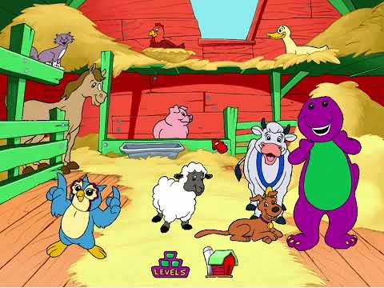
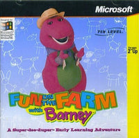
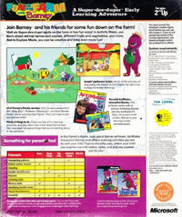

Fun on the Farm with Barney



Details
My notes
I played this in the school computer lab. Barney was the purple dinosaur. There was a farm, and I remember the opening saying to choose the place I wanted to go and click.
About the game
Fun on the Farm with Barney is a 1997 Windows educational CD-ROM, developed by 7th Level and published by Microsoft. You choose locations on a farm and play short learning activities with Barney and his friends.
Places and activities
- Chicken coop: repeat patterns with coloured hens and animal sounds.
- Pigpen: colour pictures and match clothing to seasons.
- Garden: recognise fruits and vegetables, then arrange a garden.
- Musical barn: identify animals and their sounds.
- Duck pond: count frogs and match them to numbers.
- Video farmhouse: watch related Barney video clips.
How it works
Activity Mode gives learning tasks; Explore Mode allows freer play. The activities cover counting, patterns, listening, memory, seasons, and food. The software could also work with the optional ActiMates Barney toy.
Identification
You recognised the linked gameplay video, confirming this memory. Your recollection of the opening instruction is preserved in My notes; its exact wording has not been independently transcribed.